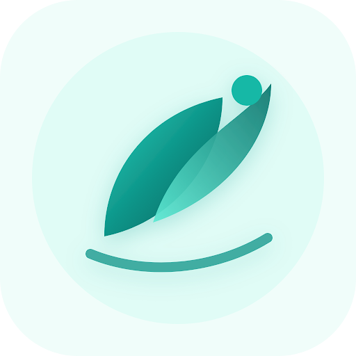

پایش آگاهانه و دوز واقعی
ثبت بدون ترس هرگونه تغییر در مقدار مصرف. برنامه هرگز شما را با خطاهای قرمز تنبیه نمیکند؛ بلکه بستری منظم میسازد تا در جلسه بعدی با پزشک، واقعیت درمان را بیپرده ارزیابی کنید.
کالیبراسیون تدریجی، نه تصمیمهای ناگهانی

رَسا | RASA پایش امن و پایبندی به درمان بالینی۱۰۰٪ رایگان و عامالمنفعه بدون تبلیغات • بدون سرور • وقف کرامت و آرامش زندگی
دستیار امن، بیقضاوت و علمی برای پایش و تثبیت درمان آگونیستهای اپیوئیدی همراه با تیم درمان
«رَسا» بدون احساس گناه یا سرزنش، با حفظ حریم خصوصی ۱۰۰٪ آفلاین و ذخیره اطلاعات منحصراً روی گوشی شما طراحی شده تا آرامش، اعتمادبهنفس و کنترل زندگی را دوباره با عزتنفس جشن بگیرید.
داشبورد امروز
سهشنبه ۲۴ بهمن
۲۵ میلیگرم (سیسی)
ساعت ثبت: ۰۹:۳۰وضعیت آرامش و ولع
بدون اضطراب، خواب پایدارمحرمانگی مطلق و رمزگذاری
دادههای شما هرگز دستگاه را ترک نمیکنند.
۳۸ روز استمرار آگاهانه ✨
کاهش ۲۵٪ دوز بدون افت کیفیت خواب
خروجی مستند جهت ویزیت پزشک MMT
ارزیابی علمی و تنظیم با آرامش دوز روزانه
فلسفه طراحی رَسا
بیمار تحت درمان نگهدارنده شایسته احترام، دقت درمانی و رهایی از نگاه تحقیرآمیز است. رَسا با دانش روانشناختی شکل گرفته تا انگیزه شما در روزهای پرچالش حفظ شود.
ثبت بدون ترس هرگونه تغییر در مقدار مصرف. برنامه هرگز شما را با خطاهای قرمز تنبیه نمیکند؛ بلکه بستری منظم میسازد تا در جلسه بعدی با پزشک، واقعیت درمان را بیپرده ارزیابی کنید.
کالیبراسیون تدریجی، نه تصمیمهای ناگهانی
امکان تغییر آیکون و نام برنامه به «یادآور نوشیدن آب» یا «دفترچه یادداشت»، رمز بیومتریک و اعلامیههای مبدل تا هیچ شخص کنجکاوی در مترو، خانه یا محل کار متوجه فرایند درمان نشود.
آرامش خاطر در جمع و خانواده
شناسایی ریشههای بازگشت و محرکها. ارتباط مستقیم بین کاهش دوز، تغییرات کیفیت خواب شبانه و نوسانات خلق در قالب گرافهای تحلیلی قابل فهم برای پیشگیری از لغزش.
شناخت الگوهای احساسی و کاهش پایدار
روی بخشهای مختلف کلیک کنید تا جزئیات معماری تجربه کاربری رَسا را لمس کنید.
پایش بلادرنگ روزانه
هنگامی که بیدار میشوید، اولین نیاز ذهن، شفافیت و سادگی است. داشبورد رَسا دوز مقرر همان روز، فاصله زمانی تا نوبت بعدی و تقویم تصویری مصرف را با رنگهای آرامشبخش نشان میدهد.
شفافیت بدون خجالت
اگر در روزی پرتنش دوز متفاوتی مصرف کردید، رَسا با خونسردی آن را ثبت میکند. هیچ پیام اخطار تحقیرکننده در کار نیست؛ رویکرد کاهش آسیب یعنی دانستن حقیقت وضعیت برای تصمیمگیری آگاهانه.
ثبت نوبت عصر
۵ میلیگرم کمتر از نوبت مشابه در هفته گذشته
پشتیبانی از تیم درمان
هنگام مراجعه به کلینیک ترک یا مطب پزشک معالج، دیگر نیازی به تکیه بر حافظه ندارید. با یک لمس، کارنامه مستند ۳۰ روزه شامل شیب کاهش، نوسانات خلق و خواب به صورت فایل PDF منظم آماده ارائه است.
شیب مصرف ۳۰ روز اخیر
حریم شخصی بینقص
اگر گوشی شما دست دوستان یا همکارانتان باشد، هیچ ردپایی از درمان دیده نمیشود. با فعالسازی «حالت استتار»، برنامه در ظاهر یک اپلیکیشن نوشیدن روزانه ۸ لیوان آب خواهد بود!
پوسته یادآور آب
تغییر آیکون و سربرگقفل فوری با تکان دادن گوشی
Shake to Lockنامه سازنده به همراهان بهبودی
متنباز و برای همیشه رایگان (Free Forever)
«این پروژه حاصل یک باور عمیق قلبی است: هر انسانی شایسته بازگشت به زندگی، بازیابی کرامت فردی و حس آرامش است. در فرایند درمان اعتیاد و نگهدارنده با متادون یا بوپرنورفین، بیمار بیشتر از هر دارویی به محیطی امن و بدون قضاوت نیاز دارد.
«رَسا» با هزینه شخصی، بدون جذب حتی یک ریال سرمایه تجاری و بدون هرگونه نمایش آگهی ساخته شده است تا دسترسی هموطنان عزیزم به یک ابزار پایش علمی و محرمانه، هرگز به خاطر هزینههای مالی محدود نشود. هیچ سازمانی به این اطلاعات دسترسی ندارد و توسعه آن صرفاً ادای دینی است به امید، سلامت و خانوادههای چشمانتظار.»
متخصصان بیطرف و دلسوز در تمام ساعات شبانهروز آماده شنیدن صدای شما هستند.
شروع یک فصل تازه
بدون نیاز به ثبت مشخصات، ایمیل یا پرداخت هزینه. مستقیماً در مرورگر استفاده کنید یا اپلیکیشن آفلاین را روی گوشی هوشمندتان نصب نمایید.